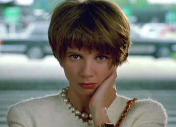
Victoria Abril - Rebeca Giner
Marisa Paredes - Becky del Páramo
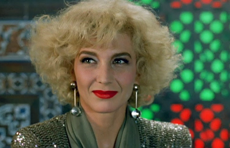
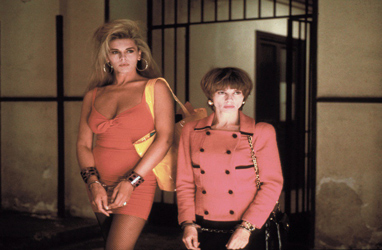
Javier Bardem - Floor manager at the TV station
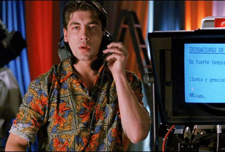
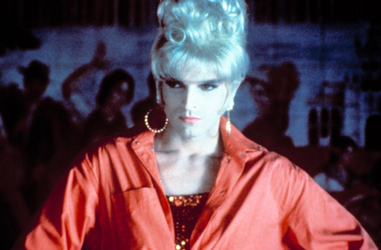
Manuel Giner (Rebeca's husband)
Isabel
Margarita
Paula
Alberto (Rebeca's stepfather)
Judge's Mother
Juan (Rebeca's father)
Luisa
Hospital Chaplain
Hospital Nurse
Rebeca as a child
Agustín Almodóvar - Photo Store customer
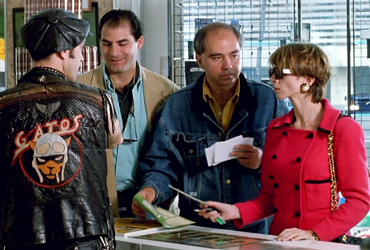
Rebeca, a television news broadcaster, is at the airport in Madrid, anxiously awaiting the return of her mother - Becky del Páramo, a famous torch song singer - whom she has not seen since childhood, and is coming back to Spain after a fifteen-year stay in Mexico. While waiting, Rebeca recalls incidents from her early life when Becky, preoccupied with her career and romantic life, left her daughter in the background. For fifteen years, Rebeca has longed for her mother to come back and for the love and affection of which she had been deprived. Nevertheless, her love is accompanied by a deep resentment.
Rebeca has since become a newsreader for a television station owned by her husband Manuel. The intensity of the family reunion is heightened because, many years ago, Manuel was one of Becky's lovers. On the night of her return, Becky, Rebeca and Manuel have supper and then go out to see Letal, a female impersonator whose drag act is based on Becky. For some time, Rebeca has been coming to see the concerts whenever she misses her mother. Backstage, Rebeca helps Letal to remove his costume and, kneeling in front of him, she is impressed by his manliness. Letal takes advantage of the situation and they make love. Manuel, who no longer loves his wife, wants to sleep with Becky again and divorce Rebeca.
A month later, Manuel is murdered in his villa. He had spent the evening first with his mistress Isabel (also Rebeca's sign language interpreter on the news) and then with Becky who, having become his lover again, had come to announce it was over between them because she had learnt about his other mistress. It was Rebeca who discovered the body. The investigating magistrate, Judge Domínguez, knows that their relationship has not recovered since Rebeca found out Becky was seeing Manuel, and centres his suspicions on both mother and daughter.
On the day of Manuel's funeral, Rebeca confesses to his murder live on television, while reading the news. She is immediately imprisoned, but the investigating judge seems desperate to prove her innocence despite all the evidence. Becky makes her return to the Madrid stage while Rebeca spends her first night in prison. In jail, she listens on the radio as her mother dedicates the first songs of her triumphant concert performance to Rebeca. A social worker, Paula, takes a special interest in Rebeca; like her, she is heartbroken, grieving the loss of her boyfriend Hugo. Rebeca sees a nude picture of Hugo that Paula carries with her, and thinks that Letal and Hugo are the same person.
The judge arranges for Becky to see her daughter, and Rebeca now denies the murder of Manuel. Mother and daughter confess their lack of love, their jealousy, and their secrets to each other. Rebeca draws a comparison between herself and the daughter in the film Autumn Sonata, in which the girl's mother, an outstanding pianist, asks her to play the piano and then humiliates her by telling her how to improve her performance. Rebeca suggests that she too has always felt inferior to Becky, and has been forced to compete with her, winning only once by marrying Manuel. But even this victory was finally denied her, when Becky started an affair with Manuel. Rebeca admits that fifteen years ago, her desire to be closer to Becky led her to murder her stepfather, and also played some part in her murder of Manuel, whom she saw as usurping her mother's affection. The extent of Rebeca's fixation and the limitlessness of her adoration are too much for Becky's frail heart, and her condition worsens. Back in prison, Rebeca discovers she is pregnant – carrying Letal's child. At once, the judge releases her from prison despite the lack of any fresh evidence.
Rebeca goes to see Letal's final drag performance. In the dressing room, she discovers that he is the judge, with Letal being one of his disguises and Hugo being another. He explains that his dressing up was just an investigative strategy and, knowing about her pregnancy, asks her to marry him. As Rebeca struggles to take this in, they see a television broadcast relating to Becky's sudden heart attack. They rush to the hospital, where Rebeca confesses to murdering Manuel, but Becky decides to take the blame in order for her daughter to go free. When Becky is taken home to die, Rebeca gives her the gun and Becky leaves her fingerprints on it, thereby incriminating herself and establishing Rebeca's innocence. When Rebeca hears the high heels of the women passing in the street, she tells her mother the sound reminds her of her mother coming home when she was little. She turns around, and realises her mother has died while she was talking.
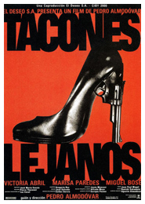
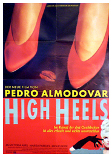
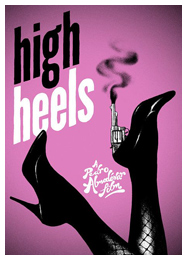
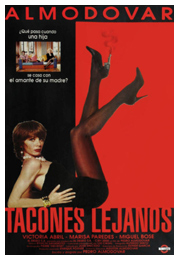
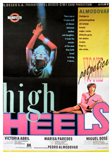
Los Hermanos Rosario
Gil Evans - Performed by Miles Davis